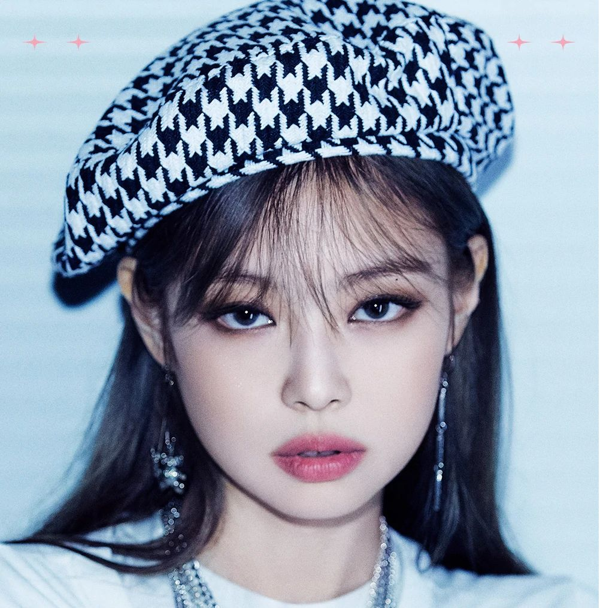
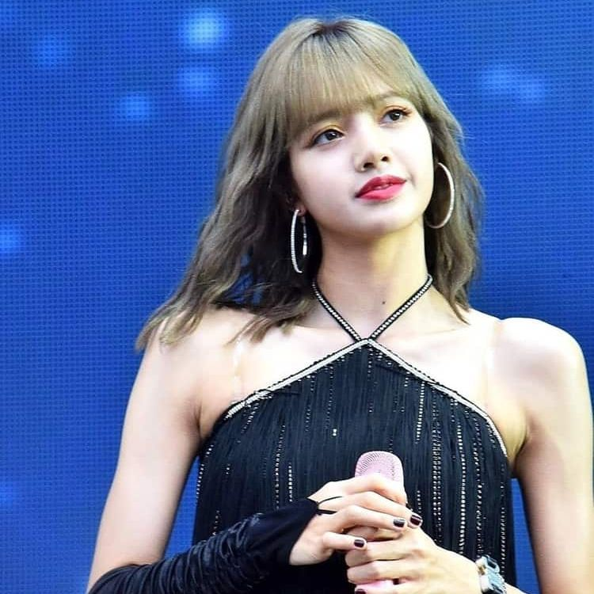

| BlackPink es un grupo coreano conformado por 4 chicas asiáticas contratadas por la empresa
YG entertaiment. Las 4 chicas son: Jisoo Kim, Jennie Kim, Roseanne Park (Rosé) y Lalisa Manobal
(Lisa). Fecha Debut= 8 de agosto del 2016 Primer Álbum debut= Square One Canciones: «Whistle» y «Boombayah» |
|
|
Nombre: Ji-soo Kim (Jisoo - en coreano 김지수) Fecha de Nacimiento: 5 de enero de 1995 Nacionalidad: Coreana Descripción: Nació en Gunpo, Provincia de Gyeonggi. Es cantante, actriz, modelo y presentadora surcoreana. Audicionó en 2011 para YG y entrenó por 5 años. Ha oarticipado en muchos progamas y evento, sumando tambien un k-drama llamado Snowdrop, estrenado en diciembre de 2021 donde tuvo un papel protagónico (Young Eun Gro). Tiene contratos con las marcas Dior, Cartier, entre otros. Canción en solitario: No tiene por ahora. |
|
|  |
Nombre: Jennie Kim (Jennie - en coreano 김제니) Fecha de Nacimiento: 16 de enero de 1996 Nacionalidad: Coreana Descripción: Jennie Kim nació en Cheongdam-dong, Seúl. A los 9 años viajó a Australia y Nueva Zelanda con sus padres y un año después la enviaron a Auckland con otra familia para que estudiara en una escuela local. En el 2010 regresó a Corea, audicionó para YG y estuvo en entrenamiento por 6 años hasta su debut el 2016. Tiene contratos con la marca Channel, entre otras. Canción en solitario: «Solo» |
|
Nombre: Roseanne Park (Rosé - en coreano 박채영) Fecha de Ncimiento: 11 de febrero de 1997 Nacionalidad: Coreana Descripción: Rosé nació en Auckland, Nueva Zelanda, pero fue criada en Melbourne, Australia. Estuvo ahí hasta el 2012 que asístió a una audición para YG intertaiment y se tuvo que mudar a Seúl, Corea luego de haber sido aceptada. Canción en solitario: «On the Ground» y «Gone» |
|
|  |
Nombre: Lalisa Manobal (en tailandés ปราณปรียา มโบาล Pranpriya Manobal) Fecha de Nacimiento: 27 de Marzo de 1997 Ncionalidad: Coreana - Tailandesa Descripción: Nació en Buri Nam y vivió toda su vida ahí hasta el 2010 cuando la empresa YG hizo una audición donde ella fue la única aceptada entre 4000 postulantes. Se mudó a Corea, sola y con la presión de apreder rápido el idioma para poder entenar mejor. Lisa se convirtió en la primera artista extranjera de YG, el 11 de abril de 2011. Desde ahí inició su entrenamiento hasta el 2016, cuando debutó en BlackPink. Canción en solitario: «Lalisa» y «Money» |